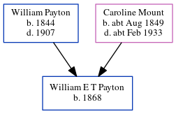

William E T Payton 1868 -
[ Home ] | [ Calendar ] | [ Surnames Index ] | [ Census Index ] | [ Family History ]The child of William Payton and Caroline Mount, William Payton, the second cousin three-times-removed on the mother's side of Nigel Horne, was born in Herne, Kent, England in 18681. Like his father, he was a brickmaker.
During his life, he was living at his birthplace on Apr 3, 18811; and in Hampton, Kent, England on Apr 5, 18912.
Parents
- William was born in 1844
- Caroline was born c. Aug 1849
Citations
- 1881 England, Wales & Scotland Census - Findmypast (was age 13 and the son of the head of the household)
- 1891 England, Wales & Scotland Census - Findmypast (was age 22 and the son of the head of the household)
Family Tree
Generated by ged2site. Last updated on Jun 11, 2024